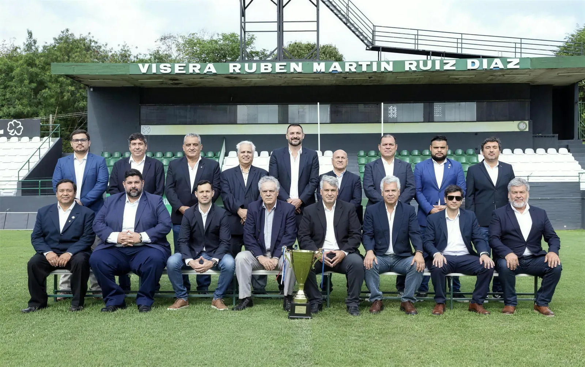

1913
The founding
A group of boys under eighteen founds the club on 24 August in Santísima Trinidad, in tribute to the children of Acosta Ñu, and chooses white and green.

A neighbourhood club with more than a century of history.
Rubio Ñu was born on 24 August 1913 in the neighbourhood of Santísima Trinidad, Asunción, founded by a group of friends who chose white and green as the club colours: white for purity, green for hope. That combination gave the club its nickname, albiverde.
In 1936, after twenty-three years, two clubs from the same neighbourhood, Itá Ybaté and Flor de Mayo, merged with Rubio Ñu to keep it alive. That refounding marked the club: always coming back, even after the losses.
The club plays its home matches at Estadio La Arboleda, and holds a historic rivalry with Sportivo Trinidense in the Clásico de Trinidad. Its players and supporters are known as ñuenses.
On 16 August 1869, during the War of the Triple Alliance, a Paraguayan army largely made up of children held out at Barrero Grande, today the city of Eusebio Ayala. It is remembered as the battle of the children.
For decades that battle was called Rubio Ñu. The mistake came from a poem by the priest Juan B. Tournedou and was repeated until 1948, when the historian Andrés Aguirre secured a decree renaming it Acosta Ñu, after the fields where it actually took place, and making 16 August Children's Day.
The club was founded in 1913, thirty-five years before that correction. A group of boys from Santísima Trinidad, all under eighteen, named their club after the battle as it was known at the time, and chose white and green in tribute to those children. Ñu means field in Guaraní.
Boys who named their club after other boys
This section is pending validation by the club's historical archive.

A historic neighbourhood club that honours more than a hundred years of resilience and aims to establish itself in the top flight.
The club's mission is to develop and export Paraguayan and South American talent, sustaining sporting and institutional growth without losing the identity of Santísima Trinidad.
A group of boys under eighteen founds the club on 24 August in Santísima Trinidad, in tribute to the children of Acosta Ñu, and chooses white and green.
Rubio Ñu wins the División Intermedia for the first time and moves up to the top division.
The club plays its first season in the highest division of Paraguayan football.
The club suspends its activities: officials and athletes join the army in the field. It resumes once the war is over.
Itá Ybaté and Flor de Mayo, two clubs from the same neighbourhood, merge with Rubio Ñu to keep it alive.
The club wins the second division without losing a match and comes through the play-off to return to the top flight.
Rubio Ñu returns to the top flight after twenty-eight years away and records its best ever campaign in the first division.
The club wins the Paraguayan second division and earns promotion to the top flight.
Rubio Ñu plays the Apertura and Clausura tournaments of the First Division.
The club's ground, in the same neighbourhood where it was founded. Rubio Ñu plays every home match here. The main stand roof carries the name of Rubén Martin Ruiz Díaz Romero, the club's president.


La Arboleda is where the club plays on Sundays. The youth teams work somewhere else: at the CARDIF, the Paraguayan Football Association's high-performance centre for youth development, where they train under the APF methodology.

Rubio Ñu's history is not a cabinet full of major trophies: it is the story of a club that fell many times and always climbed back.
The officials who run the club.

Board of directors for the 2024 / 2026 term.
SPONSORS